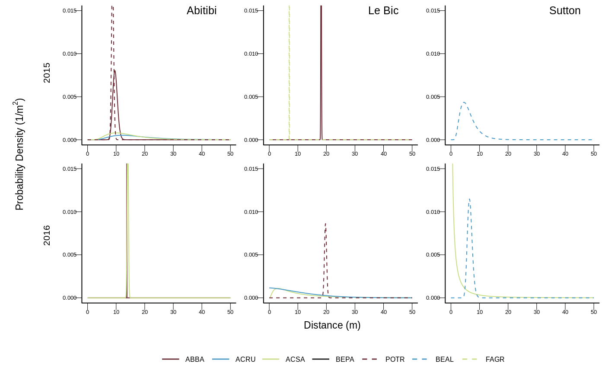
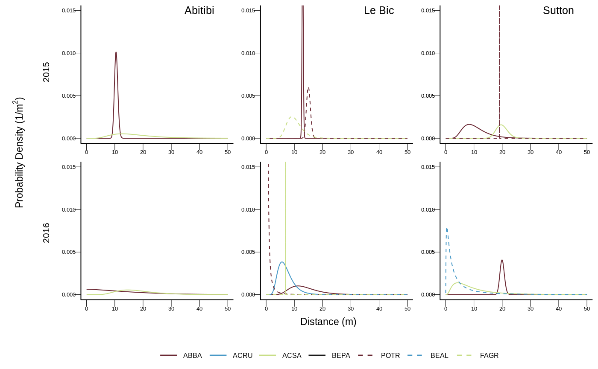

vignettes/Solarik2019.Rmd
Solarik2019.RmdThis vignette aims at guiding the reader through the different steps of the analysis carried out in Priority effects will prevent range shifts of temperate tree species into the boreal forest.1.
Data are currently archived on Dryad at the following URL https://doi.org/10.5061/dryad.q573n5tdx and can be download using retrieveData() as follows
This create a folder (by default it is input) with all datasets as .csv or .xlsx files. Once done, trees locations and regeneration files can readily be formatted with formatData(). Note that, as favuorability data are strored as .docx files,in order to use the code below it requires to convert the .docx into .csv files.
dat_abitibi <- formatData("input/abitibitrees.csv", "input/abitibiregen.csv",
"input/abitibisubstrate.csv")
dat_lebic <- formatData("input/lebictrees.csv", "input/lebicregen.csv",
"input/lebicsubstrate.csv", abbr_site = "bic")
dat_sutton <- formatData("input/suttontrees.csv", "input/suttonregen.csv", "input/suttonsubstrate.csv", abbr_site = "sut")By default all the files created will be exported as .rds file in output. Note that we stored all these data as .rda files in data. For every site data are list of five objects:
## [1] "trees" "regen2015" "regen2016" "lsdist" "iddist"trees that includes identity and position of trees;regen2015 and regen2016 regeneration and favourability data for 2015 and 2016 respectively (favourability values are the same for both years);lsdist a list of distances: for every plot it gives the distance of all surrounding tree including in the site;iddist a list of logicals of the same format as lsdist that states whether the tree is included in the buffer.See, for instance, ?dat_abitibi
As explained in the original study, recruitment data have been measured on three different sites:
The map below shows the location of those sites. For each site, extra information are available on click.
| abbr1 | abbr2 | Scientific Names | TSN | abi | bic | sut |
|---|---|---|---|---|---|---|
| BF | ABBA | Abies balsamea | 18032 | TRUE | TRUE | TRUE |
| RM | ACRU | Acer rubrum | 28728 | TRUE | TRUE | FALSE |
| SM | ACSA | Acer saccharum | 28731 | TRUE | TRUE | TRUE |
| YB | BEAL | Betula alleghaniensis | 19481 | FALSE | FALSE | TRUE |
| WB | BEPA | Betula papyrifera | 19489 | TRUE | TRUE | TRUE |
| AB | FAGR | Fagus grandifolia | 19462 | FALSE | FALSE | TRUE |
| AS | POTR | Populus tremuloides | 195773 | TRUE | TRUE | TRUE |
Below are detailed the steps to reproduce our analysis.
For a given species and a given year, the seeds recruitment depends on:
\[R_i = \text{STR}\sum_{j=1}^Sc_{i,j}f_{i,j}\sum_{k=1}^T\left(\frac{\text{DBH}_k}{30}\right)^2 \frac{1}{K}e^{-\text{DM}_{i,k}}e^{-\frac{h_i}{1-h_i}\sum_{l=1}^Ba_{i,l}}\]
For each model, we estimate the parameters through the maximization of the likelihood (actually the minimization of the likelihood log-transformed) for the corresponding data. Every model is a combination :
As an example, below are the 15 first models out of the 320 tested for Abies balsamea:
| site | tree | year | age | pz | disp | favo | neigh |
|---|---|---|---|---|---|---|---|
| abi | ABBA | 2015 | 1 | TRUE | 0 | TRUE | TRUE |
| abi | ABBA | 2015 | 1 | TRUE | 1 | TRUE | TRUE |
| abi | ABBA | 2015 | 1 | TRUE | 2 | TRUE | TRUE |
| abi | ABBA | 2015 | 1 | TRUE | 3 | TRUE | TRUE |
| abi | ABBA | 2015 | 1 | TRUE | 4 | TRUE | TRUE |
| abi | ABBA | 2015 | 1 | TRUE | 0 | FALSE | TRUE |
| abi | ABBA | 2015 | 1 | TRUE | 1 | FALSE | TRUE |
| abi | ABBA | 2015 | 1 | TRUE | 2 | FALSE | TRUE |
| abi | ABBA | 2015 | 1 | TRUE | 3 | FALSE | TRUE |
| abi | ABBA | 2015 | 1 | TRUE | 4 | FALSE | TRUE |
| abi | ABBA | 2015 | 1 | TRUE | 0 | TRUE | FALSE |
| abi | ABBA | 2015 | 1 | TRUE | 1 | TRUE | FALSE |
| abi | ABBA | 2015 | 1 | TRUE | 2 | TRUE | FALSE |
| abi | ABBA | 2015 | 1 | TRUE | 3 | TRUE | FALSE |
| abi | ABBA | 2015 | 1 | TRUE | 4 | TRUE | FALSE |
As the models we used are not linear and highly customized we optimized the likelihood with the simulated annealing algorithm implemented in GenSA2.
For each row of simuDesign, columns are arguments passed to recruitmentAnalysis() in which:
parameters are computed for the simulated annealing (getParameters());
simulated annealing is performed (GenSA() from GenSA package) to minimize the likelihood (getLikelihood()).
| STR | Pz | scal | shap | pm | pl | pn | pd | ps | pb | |
|---|---|---|---|---|---|---|---|---|---|---|
| start | 1e+02 | 0.5 | 1.00 | 2 | 0.5 | 0.5 | 0.5 | 0.5 | 0.5 | 1 |
| low | 0e+00 | 0.0 | 0.02 | 1 | 0.0 | 0.0 | 0.0 | 0.0 | 0.0 | 0 |
| high | 1e+06 | 1.0 | 20.00 | 4 | 1.0 | 1.0 | 1.0 | 1.0 | 1.0 | 1000 |
The line below (not run) allows to run for the 16th model.
res <- launchIt(iter = 16, simu = simuDesign, mxt = 100,
record = "output/test.txt", quiet = TRUE, path = "output/")
# value (likelihood)
res$value
# parameters value
res$parNote that test.txt records all the values tested during the simulated algorithm and the corresponding likelihood based on which we obtain a confident interval.
Once all models run and the best models identified (which took days on a server and we thank Calcul Quebec for making such computations possible), we draw figure 5 that is the dispersal kernels inferred for one year seedlings

Similarly, we used this function to draw the same figure for 2 years seedlings (see Supplementary Information of the paper):

Solarik et al. DOI: 2Badded↩
Y. Xiang, S. Gubian. B. Suomela, J. Hoeng (2013). Generalized Simulated Annealing for Efficient Global Optimization: the GenSA Package for R. The R Journal, Volume 5/1, June 2013. https://journal.r-project.org/archive/2013/RJ-2013-002/index.html↩